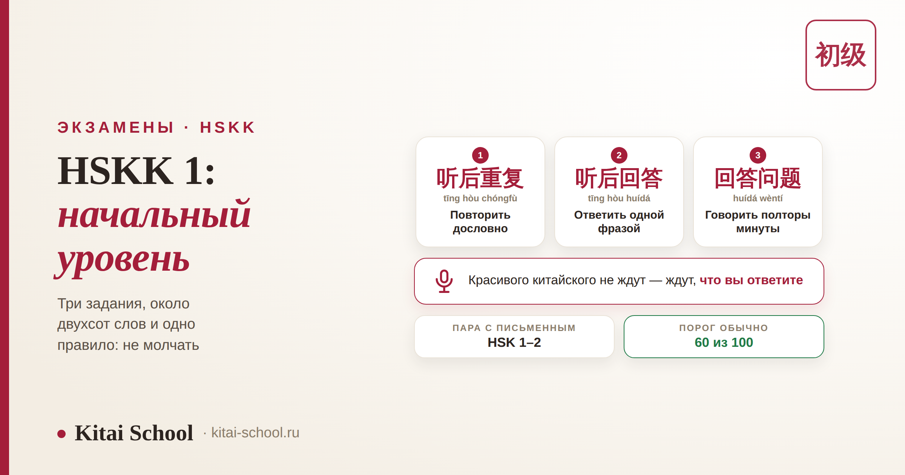
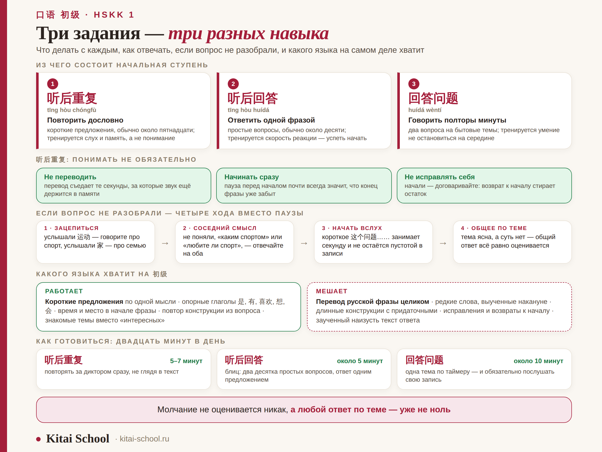

Экзамены · HSKK
HSKK 1: как сдать начальный уровень и перестать бояться говорить


Требования к языку на начальной ступени скромные: примерно тот же словарь, что на HSK 1–2, простые бытовые темы, короткие фразы. Сложность совсем не в этом. Здесь нельзя подумать и вернуться: вы говорите в микрофон по таймеру, и пауза — это просто ноль. Поэтому сдать HSKK 1 мешает обычно не незнание слов, а привычка молчать, пока не соберёшь идеальное предложение. Разберём, из чего состоит экзамен, что делать с каждым из трёх заданий и как отвечать, если вопрос вы не разобрали.
HSKK 1 — это 初级, начальная ступень устного экзамена; идёт в паре с HSK 1–2, словарь около двухсот слов. Заданий три: повторить услышанное, коротко ответить на вопрос и дать развёрнутый ответ на два вопроса. Первое из них не требует понимания вообще — только слуха и памяти. Проходной балл обычно 60 из 100. И главное: оценивают не красоту фразы, а то, что вы вообще говорите.
HSKK 1 — это 初级: что за уровень и кому он нужен
Сначала про названия, потому что путаница начинается прямо здесь. Официально ступень называется 初级 (chūjí, «начальная»), а «HSKK 1» — то же самое на обиходном языке: так пишут в расписании курсов, в объявлениях о наборе и в разговорах. Ступеней всего три: 初级, 中级, 高级. Отдельного «первого» экзамена, не совпадающего с 初级, не существует.
Как устроен HSKK в целом — уровни, поведение у микрофона, каркас ответа и речевые клише — подробно разобрано в статье про HSKK. Здесь мы не повторяем общее, а берём только начальную ступень.
| Ситуация | Стоит ли |
|---|---|
| Учите китайский меньше года, сдали или готовите HSK 1 и HSK 2 | да, это ваш уровень |
| Хотите проверить, можете ли вообще говорить, а не только читать | да, самый дешёвый способ узнать |
| Нужен документ о том, что вы говорите, для резюме или портфолио | да, у HSKK свой отдельный сертификат |
| Вуз требует устный сертификат для поступления | уточните ступень: чаще просят 中级 и выше |
| Уже говорите связно на бытовые темы минуту без остановки | начальная ступень вам мала, смотрите 中级 |
Есть и причина, не связанная с бумагой. Дата экзамена в календаре — самый честный способ заставить себя говорить вслух регулярно. Про сам документ и его срок действия — в статье про сертификат HSK.
Три задания и почему это три разных навыка
Главное, что стоит понять заранее: части экзамена не выстроены по нарастанию сложности. Они проверяют разные вещи, и готовиться к ним нужно по-разному.
| Задание | Что звучит | Что делать | Что на самом деле тренируется |
|---|---|---|---|
| 听后重复 tīng hòu chóngfù | короткие предложения, обычно около пятнадцати | повторить дословно | слух и короткая память, а не понимание |
| 听后回答 tīng hòu huídá | простые вопросы, обычно около десяти | ответить одной фразой | скорость реакции: успеть начать |
| 回答问题 huídá wèntí | два вопроса на бытовые темы | говорить примерно полторы минуты на каждый | умение не остановиться на середине |
Весь экзамен вместе с минутами на подготовку занимает около двадцати минут, и говорите вы далеко не всё это время. Точное количество заданий, тайминг и порядок частей сверяйте при регистрации в своём экзаменационном центре: формат пересматривается, и описания в интернете отстают.
听后重复: единственное задание, где понимать не обязательно
Это место, где теряет баллы больше всего людей — и почти всегда по одной причине. Услышав фразу, человек начинает её переводить: что это было, про что, какое там слово в середине. Пока идёт перевод, звук в памяти гаснет, и повторять становится нечего.
А требуется прямо противоположное. Повторить нужно дословно, и понимание для этого не нужно вообще. Работает не смысл, а звуковой след: он живёт несколько секунд, и всё, что нужно, — успеть его выпустить обратно.
| Правило | Почему так |
|---|---|
| Не переводить | перевод съедает те самые секунды, за которые след ещё держится в памяти |
| Начинать сразу | пауза перед началом почти всегда означает, что вы уже забыли конец фразы |
| Не исправлять себя | начали — договаривайте: возврат к началу стирает остаток и тратит время |
Тренируется это ровно так же, как выглядит на экзамене: включаете короткую фразу и повторяете сразу за диктором, не подглядывая в текст. Первые дни будет теряться середина — это нормально, объём слуховой памяти растёт от повторов. Заодно подтягивается произношение: вы копируете не буквы, а звучание. Отдельно про звуки и тоны — в статье про корректировку произношения.

Из личного опыта
У меня была студентка, которая знала слов больше, чем требовалось, и всё равно проваливала пробные повторения. Мы записали её ответы и послушали вместе — оказалось, что перед каждой фразой она делает вдох и паузу примерно в две секунды. За это время она пыталась понять, что услышала.
Мы поменяли только одно: договорились, что она начинает говорить сразу после сигнала, даже если не поняла ни слова. Первые несколько попыток вышли смешные — она повторяла набор звуков. Но на четвёртый или пятый раз выяснилось, что повторяет она правильно, а понимание подтягивается само, уже по ходу.
С тех пор я говорю всем, кто готовится к начальной ступени: это задание не про голову, а про рефлекс. Понимание здесь приятный бонус, а не условие.
听后回答: короткий ответ вместо рассказа
Вторая ловушка — противоположная. Вопросы простые и бытовые, и человек, обрадовавшись, что понял, начинает разворачивать полный ответ с подробностями. Времени на это нет, ответ обрывается на середине, и получается хуже, чем если бы он сказал одну фразу.
Здесь достаточно одного предложения. И есть приём, который работает почти всегда: возьмите конструкцию самого вопроса и подставьте в неё своё. Спросили 你今天几点起床？ — отвечаете 我今天七点起床。 Никакой изобретательности не требуется, а грамматика гарантированно правильная, потому что вы её не строили, а взяли готовой.
Побочная польза приёма: пока вы повторяете начало вопроса, у вас есть лишняя секунда, чтобы вспомнить нужное слово. Пауза при этом не возникает — вы уже говорите.
回答问题: полторы минуты, которые надо чем-то заполнить
А вот тут наоборот нужен объём, и короткий правильный ответ проигрывает длинному с шероховатостями. Два вопроса на бытовые темы — семья, учёба, еда, свободное время, город — и на каждый примерно полторы минуты. Это заметно больше, чем кажется на слух.
На начальном уровне выручает простая схема из трёх кругов: сначала что (прямой ответ), потом когда и где (одна-две подробности), потом почему нравится или не нравится. Каждый круг — это два-три коротких предложения, и полторы минуты закрываются без напряжения.
Не бойтесь простых предложений подряд. На этой ступени десять коротких фраз звучат лучше, чем три сложные с обрывами. Более общий каркас ответа и набор фраз на случай, если вы забыли слово, разобраны в статье про HSKK — там же список типовых тем.
Если не поняли вопрос: четыре хода вместо паузы
Это происходит почти со всеми, и заранее решённая проблема перестаёт быть проблемой. Порядок действий такой.
| Ход | Что именно делать |
|---|---|
| 1. Зацепиться за знакомое слово | услышали 运动 — говорите про спорт, услышали 家 — про семью. Одного слова достаточно, чтобы начать |
| 2. Ответить на соседний смысл | не разобрали, спрашивают «каким спортом занимаетесь» или «любите ли спорт», — отвечайте на оба сразу |
| 3. Начать вслух, а не про себя | одна короткая фраза вроде 这个问题…… занимает секунду и, в отличие от тишины, не остаётся пустотой в записи |
| 4. Сказать общее по теме | если тема ясна, а суть нет, — общий ответ всё равно оценивается |
Логика простая и на этом экзамене решает почти всё: молчание не оценивается никак, а любой ответ по теме — уже не ноль. Именно поэтому «не бояться ошибаться» здесь не утешение, а прямая стратегия набора баллов.
Какого языка хватит на начальном уровне
Ещё одна причина потерь: люди тянут на устный экзамен конструкции, которые им не по руке. Ниже — что реально помогает и что мешает.
| Работает | Мешает |
|---|---|
| Короткие предложения по одной мысли | Попытка перевести русскую фразу целиком |
| Опорные глаголы: 是, 有, 喜欢, 想, 会 | Редкие слова, выученные накануне |
| Время и место в начале фразы | Длинные конструкции с придаточными |
| Повтор конструкции из вопроса | Исправления и возвраты к началу |
| Знакомые темы вместо «интересных» | Заученный наизусть текст ответа |
Словарь начальной ступени — это примерно уровень HSK 1 и HSK 2, и добирать сверх него ради экзамена не нужно. Гораздо полезнее довести до автоматизма то, что уже знаете: живой разговор строится на небольшом наборе повторяющихся конструкций, и это хорошо видно по тому, как разговаривают в Китае.
Как готовиться: три дорожки под три задания
Поскольку задания проверяют разное, и тренировки нужны разные. Двадцати минут в день достаточно.
| Под какое задание | Что делать | Сколько |
|---|---|---|
| 听后重复 | включать короткие фразы и повторять сразу за диктором, не глядя в текст | 5–7 минут |
| 听后回答 | блиц: два десятка простых вопросов, отвечать одним предложением без пауз | около 5 минут |
| 回答问题 | одна тема в день: говорить полторы минуты по таймеру и обязательно слушать запись | около 10 минут |
Запись — не формальность, а половина смысла. Себя изнутри вы слышите не так, как слышит микрофон: паузы кажутся короче, а спотыкания незаметнее. Общие приёмы подготовки к устному экзамену собраны в статье про HSKK, чтобы здесь не повторяться; если же китайский вы только начали, полезно посмотреть разбор старта с нуля.
Частые вопросы (FAQ)
HSKK 1 и 初级 — это одно и то же?
Да. Официально начальная ступень устного экзамена называется 初级 (chūjí), а «HSKK 1» — то же самое на обиходном языке: так пишут в объявлениях о наборе, в расписании курсов и в разговорах. Всего ступеней три: 初级, 中级 и 高级. Если видите оба обозначения рядом, речь про один и тот же экзамен, никакой отдельной «первой» версии не существует.
Какой уровень HSK нужен, чтобы сдавать HSKK 1?
Формально никакой: устный экзамен сдают отдельно, и допуск по письменному HSK не требуется. По объёму языка начальная ступень идёт в паре с HSK 1–2 — это примерно двести слов и простые бытовые темы. Но ориентироваться лучше не на свой уровень HSK, а на другое: можете ли вы ответить на простой вопрос вслух и сразу, не переводя фразу в голове.
Сколько нужно набрать, чтобы сдать HSKK 1?
Обычно порог составляет 60 баллов из 100. Оценивают не количество безошибочных предложений, а то, насколько понятно и связно вы говорите: произношение, беглость и полноту ответа. Пороги и правила подсчёта время от времени пересматривают, поэтому актуальные цифры сверяйте на официальном сайте экзамена и в своём экзаменационном центре.
Что делать, если не понял вопрос на экзамене?
Не молчать. Зацепитесь за любое знакомое слово из вопроса и говорите про него; если поняли тему, но не суть, отвечайте на соседний смысл — про спорт, про еду, про семью. Общий ответ по теме всё равно оценивается, а пауза не оценивается никак. Это единственный случай, когда «сказать не совсем то» лучше, чем «промолчать».
Нужно ли понимать предложение в 听后重复?
Нет, и это главная особенность задания. От вас требуется повторить услышанное дословно, а не пересказать смысл. Понимание тут скорее мешает: пока вы переводите фразу, звуковой след в памяти успевает погаснуть. Правильная стратегия — повторять как эхо, начиная сразу и не исправляя себя по дороге.
Стоит ли сдавать HSKK 1, если я уже готовлюсь к HSK 3?
Часто да. Устная речь у большинства отстаёт от чтения, и начальная ступень честно показывает, где вы находитесь именно в говорении. Плюс у экзамена есть побочный эффект, ради которого его иногда и сдают: дата в календаре заставляет говорить вслух регулярно, а не «когда-нибудь потом». Если же нужен документ для вуза, сначала уточните, какую ступень там принимают.
Устную речь трудно поставить в одиночку: себя вы слышите не так, как слышит экзаменатор. Приходите на бесплатный урок — послушаем, как вы говорите сейчас, честно скажем, готовы ли вы к начальной ступени, и соберём подготовку под вашу дату.
Или напишите слово УСТНЫЙ нашему менеджеру в Telegram — разберём вашу ситуацию.
Дальше по теме: как устроен устный экзамен целиком — HSKK; письменная пара к этому уровню — HSK 1 и HSK 2; следующая ступень письменного — HSK 3; звуки и тоны — корректировка произношения; и общая картина пути — этапы изучения китайского.
Источники
- Официальные материалы HSKK — ступени, состав заданий и порядок регистрации; актуальную версию смотрите на официальном сайте экзамена.
- Разбор устного экзамена целиком — статья «HSKK» в блоге Kitai School.
- Практика Kitai School — подготовка студентов к устному экзамену с начального уровня.
Говорите смело! 加油！